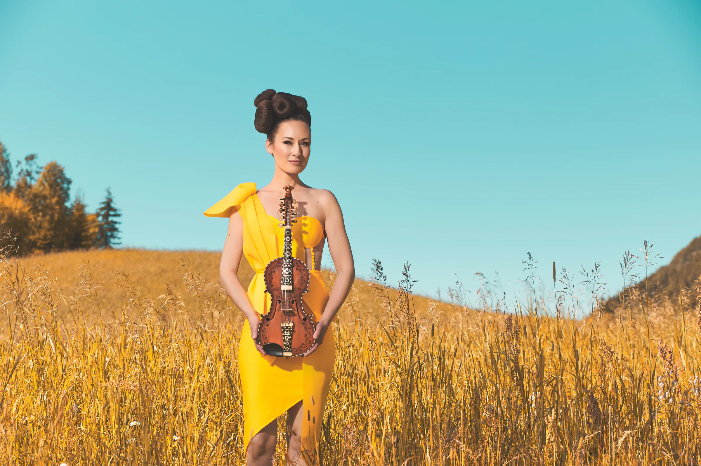
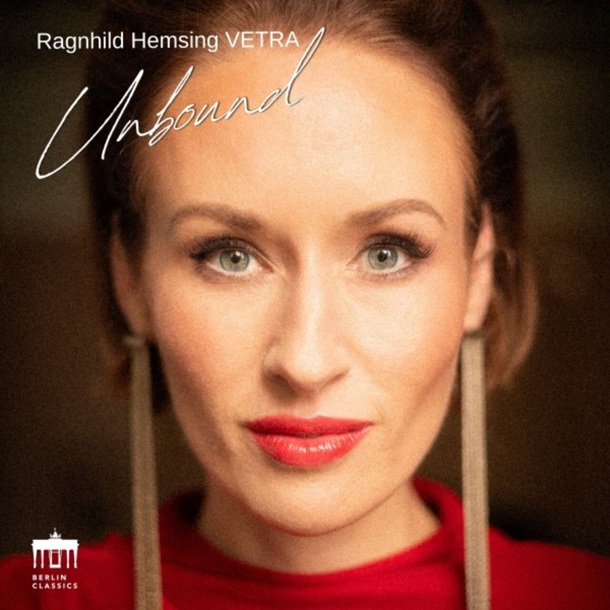
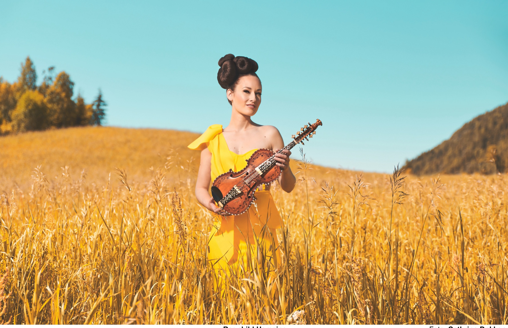
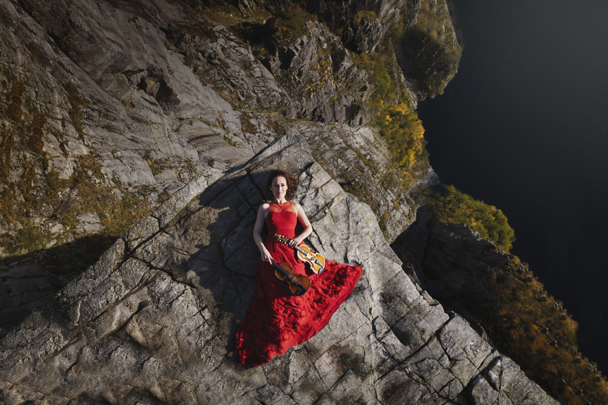
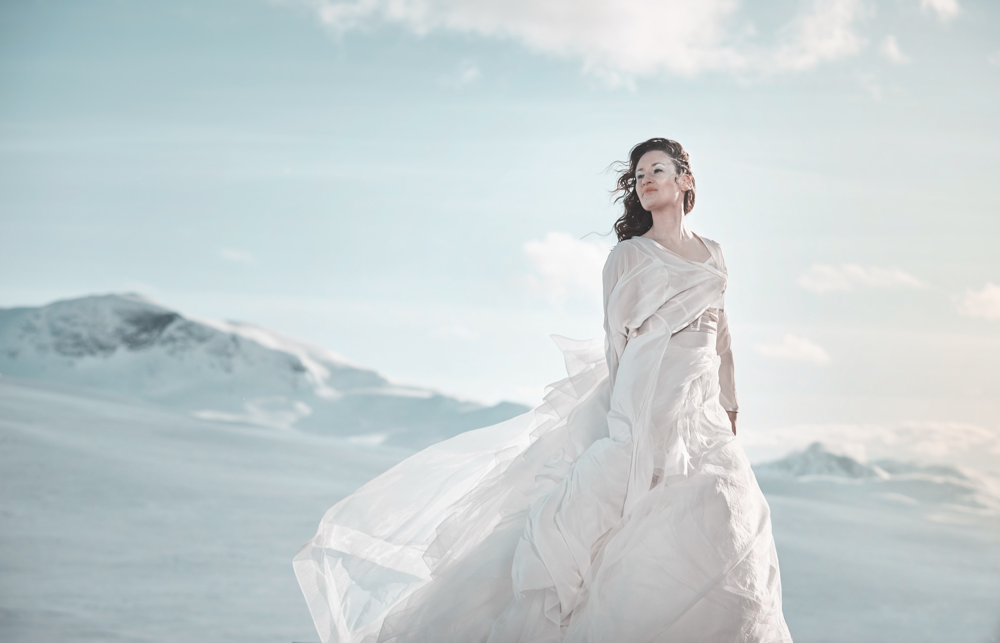
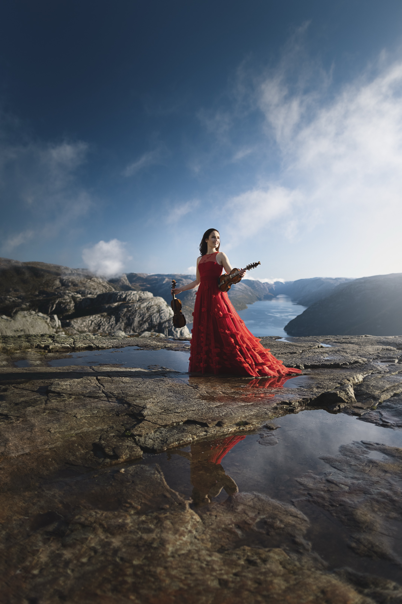

World premiere
Ørjan Matre’s Attmed
Grieghallen
Bergen, Norway
Bergen Philharmonic
Nicholas Collon, conductor

Two strings of tradition
Where the Hardanger fiddle meets the classical world.
I Projects
Raised in Valdres, Ragnhild carries the ringing overtones of the Hardanger fiddle into the concert hall—and lets the classical violin answer.
Read Ragnhild’s bio61° 08′ N
8° 49′ E
The signature
Not a crossing between traditions, but a place where both already belong.

Current chapter · Berlin Classics
Hardanger fiddle, trumpet, bass and ice percussion move without borders—ancient resonance carried through a contemporary Nordic landscape.
VETRA · Mathias Eick · Steinar Raknes · Terje Isungset
Listen to the albumDiscography
II On stage
Next performance
World premiere
Grieghallen
Bergen, Norway
Bergen Philharmonic
Nicholas Collon, conductor
III News
Field notes, collaborations and the ideas that continue after the last note.

Four newly commissioned works will more than double the repertoire for Hardanger fiddle and orchestra.



Rooted in Valdres
Carriedbeyond.